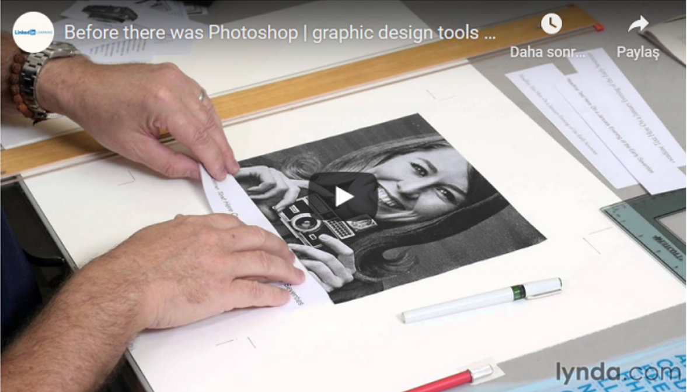

Aa
Everyday digital interfaces include a rich variety of images, visualizations, and other pictures. However, more than anything else, they are made of words. Oh so many words. As we equip teams to design and code usable, consistent, beautiful interfaces using systems, it’s essential that words depend on a strong foundation of typography.
I’ll admit, I am not a typography expert. I lack a graphic design degree. I’m never the person choosing a font, scaling type, or finessing letter spacing. As a result, I’ve always been reluctant to write about typography.
On the other hand, I am a pattern hunter. Over the years, I’ve contributed to many design systems that set a foundation for typography. Each traversed of steps and decisions to set a foundation and apply it to an emerging library of interface components. This article summarizes those patterns.
Typography starts by setting a foundation of font families and weights along with fallbacks. It then explores how to build hierarchy using size, color, additional details like line-height, and layering responsiveness. Those models are then applied to components in a system’s library (like Article and Header) as well as custom components made by other teams.
Ekstra bilgi, bu video, Photoshop ve diğer grafik tasarım programları için video dersler hazırlayan Lynda tarafından Photoshop’un 25. Yılını kutlamak amacıyla hazırlanmış.
Originally published at www.ferdicildiz.net on July 18, 2015.